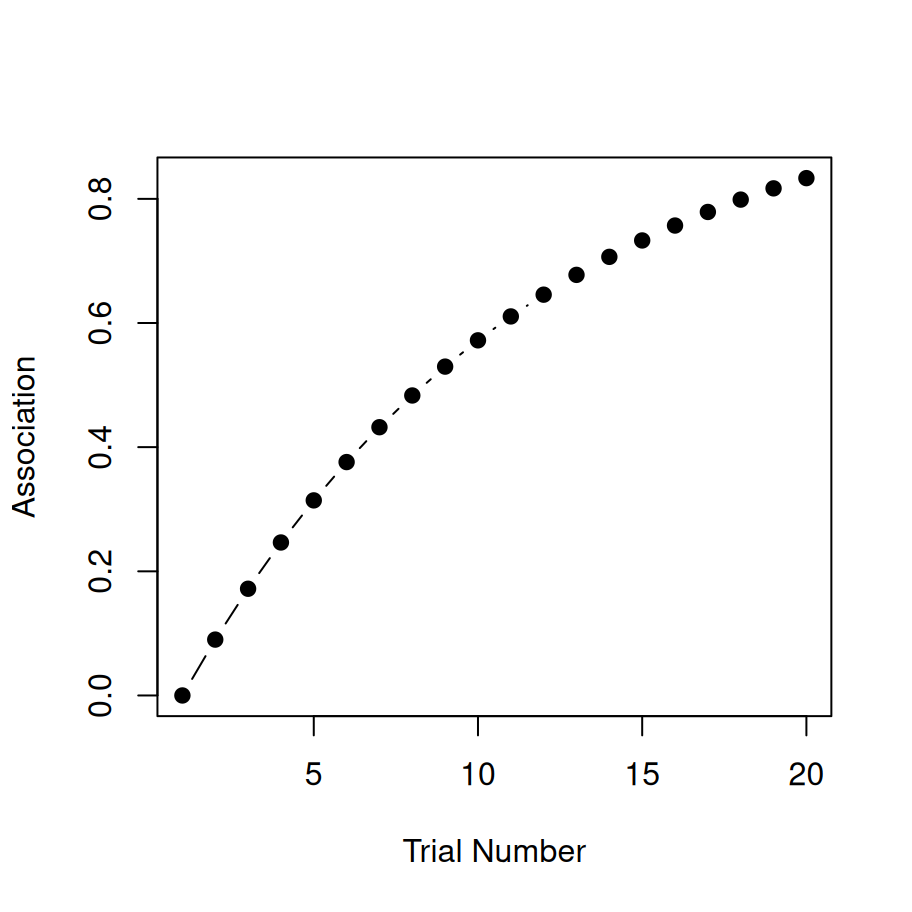
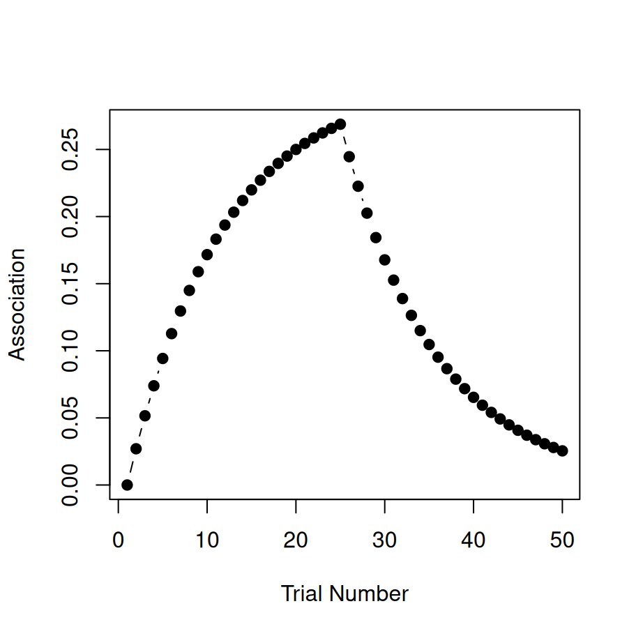
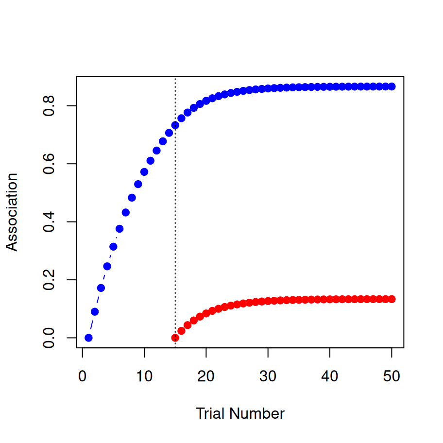

update_RW <- function(value, alpha, beta, lambda) {
}10. Programming
Fry –
Who cares what you’re programmed for?
If someone programmed you to jump off a bridge, would you do it?
Bender –
I’ll have to check my program … [pause] … Yep!
–Futurama, Space Pilot 3000, 1999
At this point you have all the tools you need to write a fully functional R program. To illustrate this, let’s write a program that implements the Rescorla-Wagner model of associative learning, and apply it to a few simple experimental designs. All the code in this section is available in the rescorla_wagner.R script.
1 Rescorla-Wagner
The Rescorla-Wagner model provides a learning rule that describes how associative strength changes during Pavlovian conditioning. Suppose we take an initially neutral stimulus (e.g., a tone), and pair it with an outcome that has inherent value to the organism (e.g., food, shock). Over time the organism learns to associate the tone with the shock and will respond to the tone in much the same way that it does to the shock. In this example the shock is referred to as the unconditioned stimulus (US) and the tone is the conditioned stimulus (CS).
Suppose we present a compound stimulus AB, which consists of two things, a tone (A) and a light (B). This compound is presented together with a shock. In associative learning studies, this kind of trial is denoted AB+ to indicate that the outcome (US) was present at the same time as the two stimuli that comprise the CS. According to the Rescorla-Wagner model, the rule for updating the associative strengths \(v_A\) and \(v_B\) between the originally neutral stimuli and the shock is given by:
\[ \begin{array}{rcl} v_A &\leftarrow& v_A + \alpha_A \beta_U (\lambda_U - v_{AB}) \\ v_B &\leftarrow& v_B + \alpha_B \beta_U (\lambda_U - v_{AB}) \\ \end{array} \] where the associative value \(v_{AB}\) of the compound stimulus AB is just the sum of the values of the two items individually. This is expressed as:
\[ v_{AB} = v_A + v_B \]
To understand this rule, note that:
- \(\lambda_U\) is a variable that represents the “reward value” (or “punishment value”) of the US itself, and as such represents the maximum possible association strength for the CS.
- \(\beta_U\) is a learning rate linked to the US (e.g. how quickly do I learn about shocks?)
- \(\alpha_A\) is a learning rate linked to the CS (e.g, how quickly do I learn about tones?)
- \(\alpha_B\) is also a learning rate linked to the CS (e.g, how quickly do I learn about lights?)
So this rule is telling us that we should adjust the values of \(v_A\) and \(v_B\) in a fashion that partly depends on the learning rate parameters (\(\alpha\) and \(\beta\)), and partly depends on the prediction error (\(\lambda - v_{AB}\)) corresponding to the difference between the actual outcome value \(\lambda\) and the value of the compound \(v_{AB}\).
The Rescorla-Wagner successfully predicts many phenomena in associative learning, though it does have a number of shortcomings. However, despite its simplicity it can be a little difficult at times to get a good intuitive feel for what the model predicts. To remedy this, lets implement this learning rule as an R function, and then apply it to a few experimental designs.
2 R implementation
To work out how to write a function that implements the Rescorla-Wagner update rule, the first thing we need to ask ourselves is what situations do we want to describe? Do we want to be able to handle stimuli consisting of only a single feature (A), compounds with two features (AB), or compounds that might have any number of features? Do we want it to handle any possible values for the parameters \(\alpha\), \(\beta\) and \(\lambda\) or just some? For the current exercise, I’ll try to write something fairly general-purpose!
2.1 The skeleton
To start with, I’ll create a skeleton for the function that looks like this:
My thinking is that value is going to be a vector that specifies the associative strength of association between the US and each element of the CS: that is, it will contain the values \(v_A\), \(v_B\), etc. Similarly, the alpha argument will be a vector that specifies the various salience parameters (\(\alpha_A\), \(\alpha_B\), etc) associated with the CS. I’m going to assume that there is only ever a single US presented, so we’ll assume that the learning rate \(\beta\) and the maximum associability \(\lambda\) associated with the US are just numbers.
2.2 Make a plan
So now how do I fill out the contents of this function? The first thing I usually do is add some comments to scaffold the rest of my code. Basically I’m making a plan:
update_RW <- function(value, alpha, beta, lambda) {
# compute the value of the compound stimulus
# compute the prediction error
# compute the change in strength
# update the association value
# return the new value
}2.3 Fill in the pieces
Since the stimulus might be a compound (e.g. AB or ABC), the first thing we need to do is calculate the value (\(V_{AB}\)) of the compound stimulus. In the Rescorla-Wagner model, the associative strength for the compound is just the sum of the individual strengths, so I can use the sum function to add up all the elements of the value argument:
update_RW <- function(value, alpha, beta, lambda) {
# compute the value of the compound stimulus
value_compound <- sum(value)
# compute the prediction error
# compute the change in strength
# update the association value
# return the new value
}The value_compound vector plays the same role in my R function that \(V_{AB}\) plays in the equations for the Rescorla-Wagner model. However, if we look at the Rescorla-Wagner model, it’s clear that the quantity that actually drives learning is the prediction error, \(\lambda_U - V_{AB}\), namely the difference between the maximum association strength that the US supports and the current association strength for the compound. Well that’s easy… it’s just subtraction:
update_RW <- function(value, alpha, beta, lambda) {
# compute the value of the compound stimulus
value_compound <- sum(value)
# compute the prediction error
prediction_error <- lambda - value_compound
# compute the change in strength
# update the association value
# return the new value
}Now we have to multiply everything by \(\alpha\) and \(\beta\), in order to work out how much learning has occurred. In the Rescorla-Wagner model this is often denoted \(\Delta v\). That is:
\[ \begin{array}{rcl} \Delta v_A &=& \alpha_A \beta_U (\lambda_U - v_{AB}) \\ \Delta v_B &=& \alpha_B \beta_U (\lambda_U - v_{AB}) \\ \end{array} \]
Within our R function, that’s really simple because that’s just multiplication. So let’s do that, and while we’re at it we’ll update the value (that’s just addition) and return the new association value…
update_RW <- function(value, alpha, beta, lambda) {
# compute the value of the compound stimulus
value_compound <- sum(value)
# compute the prediction error
prediction_error <- lambda - value_compound
# compute the change in strength
value_change <- alpha * beta * prediction_error
# update the association value
value <- value + value_change
# return the new value
return(value)
}2.4 Tidying
Depending on your personal preferences, you might want to reorganise to make this a little shorter. You could do this by shortening the comments and moving them to the side. You might also want to set some sensible default values, as I have done here:
update_RW <- function(value, alpha=.3, beta=.3, lambda=1) {
value_compound <- sum(value) # value of the compound
prediction_error <- lambda - value_compound # prediction error
value_change <- alpha * beta * prediction_error # change in strength
value <- value + value_change # update value
return(value)
}All done! Yay! 🎈
3 Model predictions
Okay, now that we have a function update_RW that implements the Rescorla-Wagner learning rule, let’s use it to make predictions about three learning phenomena: conditioning, extinction and blocking.
3.1 Conditioning
For the first “experiment” to simulate, we’ll pair a simple CS (i.e. not compound) with a US for 20 trials, and examine how the association strength changes over time. So get started, we’ll specify the number of trials
n_trials <- 20 and we’ll create a numeric strength vector that we will use to store the association strengths. The way we’ll do that is like this:
strength <- numeric(n_trials)
strength [1] 0 0 0 0 0 0 0 0 0 0 0 0 0 0 0 0 0 0 0 0As you can see, the numeric function has created a vector of zeros for us. When trial 1 begins association strength is in fact zero, so that much is correct at least, but of course we’ll need to use the update_RW function to fill in the other values correctly. To do that, all we have to do is let the experiment run! We set up a loop in which we “present” the CS-US pairing and update the association strength at the end of each trial:
for(trial in 2:n_trials) {
strength[trial] <- update_RW( strength[trial-1] )
}That’s it! Now we print out the association strength:
print(strength) [1] 0.0000000 0.0900000 0.1719000 0.2464290 0.3142504 0.3759679 0.4321307
[8] 0.4832390 0.5297475 0.5720702 0.6105839 0.6456313 0.6775245 0.7065473
[15] 0.7329580 0.7569918 0.7788626 0.7987649 0.8168761 0.8333572You can see in the output that with repeated stimulus presentations, the strength of the association rises quickly. It’s a little easier to see what’s going on if we draw a picture though:

I’ve hidden the R command that produces the plot, because we haven’t covered data visualisation yet. However, if you are interested in a sneak peek, the source code for all the analyses in this section are here.
3.2 Extinction
For the second example, let’s consider the extinction of a learned association. What we’ll do this time is start out doing the same thing as last time. For the first 25 trials we’ll present a CS-US trial that pairs a tone with a shock (or whatever) and over that time the association for the CS will rise to match the reward “value” (\(\lambda = .3\)) linked to the US. Then for the next 25 trials we will present the CS alone with no US present. We’ll capture this by setting \(\lambda = 0\) to reflect the fact that the “value” to be predicted is now zero (i.e. no shock). For simplicity, we’ll leave the learning rate \(\beta\) the same for shock and no-shock.
Okay here goes. First, let’s set up our variables:
n_trials <- 50
strength <- numeric(n_trials)
lambda <- .3 # initial reward value Now we have to set up our loop, same as before. This time around we need to include an if statement in the loop, to check whether we have moved from the learning phase (trials 1 to 25) to the extinction phase (trials 26 to 50), and adjust the value of \(\lambda\) accordingly.
for(trial in 2:n_trials) {
# remove the shock after trial 25
if(trial > 25) {
lambda <- 0
}
# update associative strength on each trial
strength[trial] <- update_RW(
value = strength[trial-1],
lambda = lambda
)
}What we expect to see in this situation is that after trial 25 when the shock is removed, the association strength starts to weaken because the learner is now associating the CS with no-shock (i.e. \(\lambda\) has dropped to zero and so the association \(v\) is slowly reverting to that value). Here’s the raw numbers:
print(strength) [1] 0.00000000 0.02700000 0.05157000 0.07392870 0.09427512 0.11279036
[7] 0.12963922 0.14497169 0.15892424 0.17162106 0.18317516 0.19368940
[13] 0.20325735 0.21196419 0.21988741 0.22709755 0.23365877 0.23962948
[19] 0.24506283 0.25000717 0.25450653 0.25860094 0.26232685 0.26571744
[25] 0.26880287 0.24461061 0.22259565 0.20256205 0.18433146 0.16774163
[31] 0.15264488 0.13890684 0.12640523 0.11502876 0.10467617 0.09525531
[37] 0.08668234 0.07888093 0.07178164 0.06532129 0.05944238 0.05409256
[43] 0.04922423 0.04479405 0.04076259 0.03709395 0.03375550 0.03071750
[49] 0.02795293 0.02543716Here they are as a pretty picture:

That looks right to me! Extinction is initially effective at removing the association, but it’s effectiveness declines over time, so that by the end of the task there’s still some association left.
3.3 Blocking
For the final example, consider a blocking paradigm. In this design we might initially pair a tone with a shock (A+ trials) for a number of trials until an association is learned. Then we present a compound stimulus AB (tone plus light) together with a shock (AB+). During the first phase, the learner quickly acquires a strong association between A and the shock, but then during the second phase they don’t learn very much about B, because A already predicts the shock.1
Because we are presenting a compound stimulus, the values that we pass to the update_RW function can be vectors. But that’s okay, we designed our function to be able to handle that. So let’s start by setting up our modelling exercise:
# total number of trials across
# both phases of the task
n_trials <- 50
# vectors of zeros
strength_A <- rep(0,n_trials)
strength_B <- rep(0,n_trials)There are two strength vectors here, one for the tone (A) and one for the light (B). Of course, during the first phase of the task the light isn’t actually present, which we can capture by setting the relevant learning rate (or salience) parameter \(\alpha\) to 0:
alpha <- c(.3, 0)This means that at the start of the task, the model will learn about the tone but not the light. After trial 15, however, both stimuli will be present. For simplicity I’ll assume they’re equally salient, so after trial 15 the \(\alpha\) value becomes .3 for both stimuli.
As before we construct a loop over the trials:
for(trial in 2:n_trials) {
# after trial 15, both stimuli are present
if(trial > 15) alpha <- c(.3, .3)
# vector of current associative strengths
v_old <- c(strength_A[trial-1], strength_B[trial-1])
# vector of new associative strengths
v_new <- update_RW(
value = v_old,
alpha = alpha
)
# record the new strengths
strength_A[trial] <- v_new[1]
strength_B[trial] <- v_new[2]
}It’s a little more complex this time because we have read off two strength values and pass them to the update_RW function.2 Hopefully it is clear what this code is doing.
As with the previous two examples we could print out strength_A and strength_B, but realistically no-one likes looking at long lists of numbers so let’s just draw the picture. In the plot below, the blue line shows the associative strength to A and the red line shows the associative strength to B:

That’s the blocking effect, right there 😀. The model learns a strong association between the tone and the shock (blue) but the association it learns between the light and the shock (red) is much weaker.
4 Done!
If you’ve been following along yourself you are now officially a computational modeller. Nice work!
Footnotes
In a real blocking study there would be various control conditions but I’m not going to bother modelling those here. I just want to show how our code works for the important one!↩︎
In fact, we could make this code a lot simpler if we’d recorded the strengths as a matrix rather than two vectors, but since I haven’t introduced matrices yet I’ve left it in this slightly more clunky form with vectors↩︎